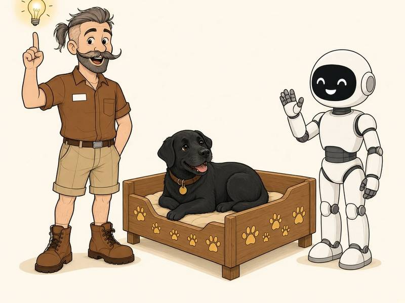
Čítanie online
Pán Pepo a vratká postieľka
Narodeninový príbeh
Pán Pepo vyrába Sakure na narodeniny útulnú postieľku. Obrúsi ju dohladka, natrie ju veselými farbami a vyzerá dokonale – až kým si do nej nesadne Luna a celá postieľka sa nezakýva! Nežný príbeh o tom, ako sa veľmi snažiť, zhlboka sa nadýchnuť a zistiť, že niektoré veci len čakajú, kým ich niekto začne používať.
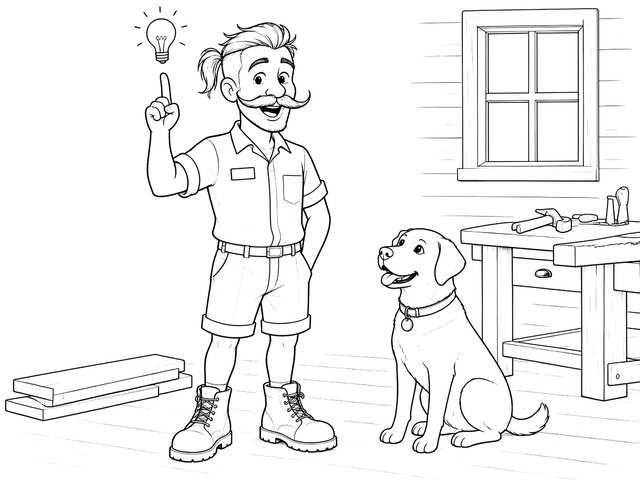
Strana 1
Zajtra mala Sakura narodeniny a pán Pepo dostal nápad.
„Vyrobím jej niečo výnimočné,“ povedal.
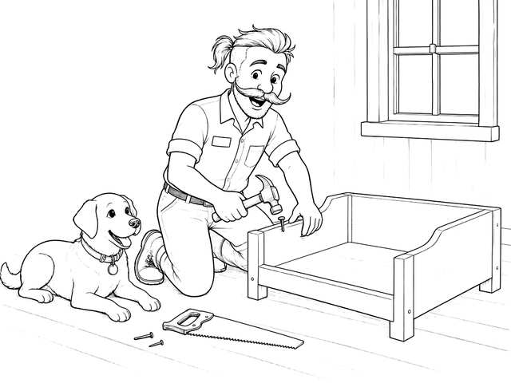
Strana 2
Pepo vyrobil Sakure na narodeniny postieľku. Útulnú, presne pre ňu, so štyrmi pevnými nožičkami a nízkymi bočnicami dookola.
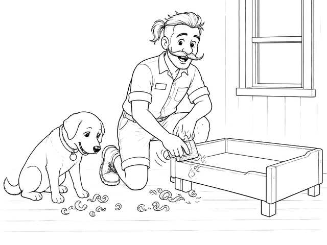
Strana 3
Obrúsil ju dohladka.
Šuch, šuch, šuch.
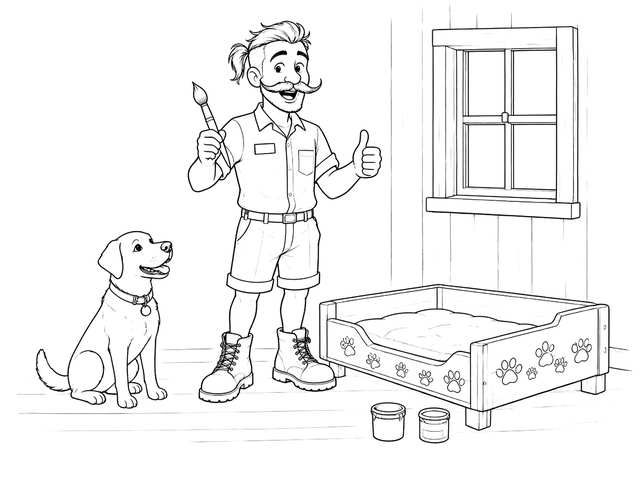
Strana 4
Natrel ju veselými farbami a po bokoch namaľoval malé odtlačky labiek. A keď o krok ustúpil, vyzerala dokonale.
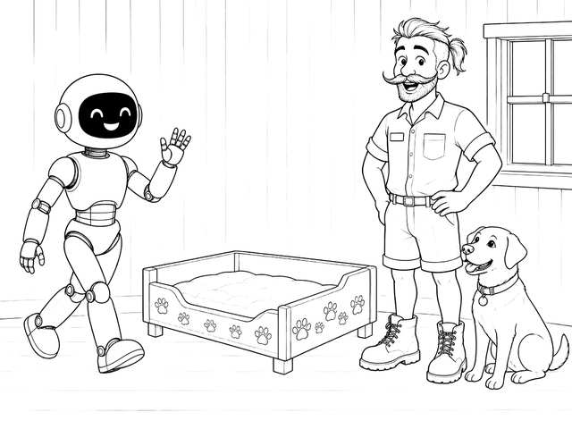
Strana 5
Prišla sa pozrieť Luna. Svetielka na hľadí sa jej rozžiarili.
„Je nádherná,“ povedala.
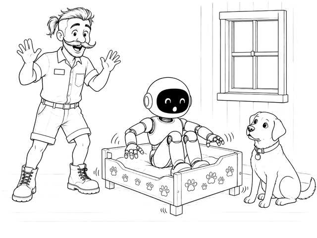
Strana 6
Potom si na ňu Luna sadla – a celá postieľka sa zakývala.
Kývy, kývy, kýv.
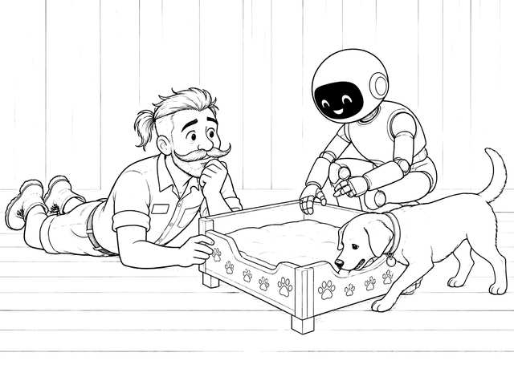
Strana 7
Pepo skontroloval nožičky.
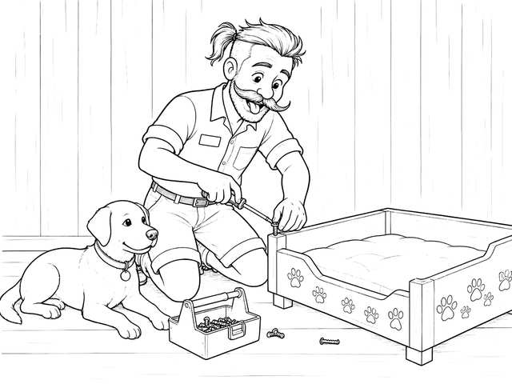
Strana 8
Utiahol skrutky.
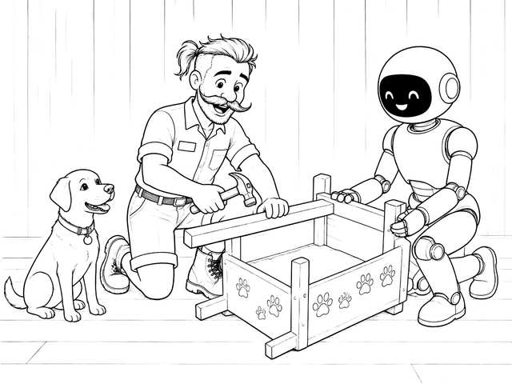
Strana 9
Zospodu pridal podperu. Luna držala koniec a Sakura sa pozerala.
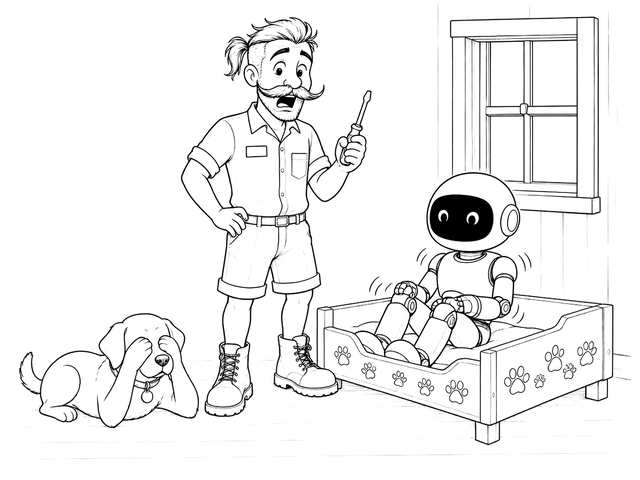
Strana 10
Luna si znova sadla.
Stále sa kýve.
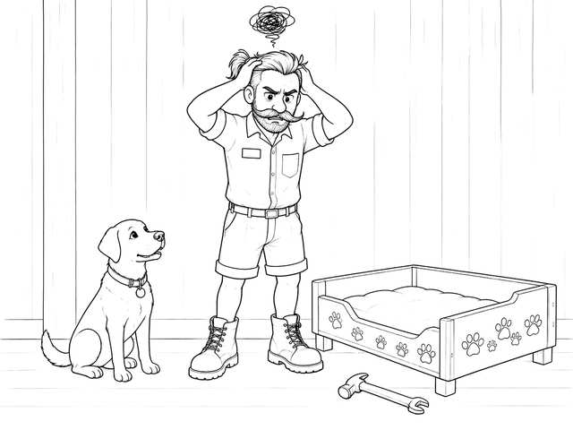
Strana 11
Pepa to už hnevalo, lebo všetko urobil správne, a stále to nefungovalo.
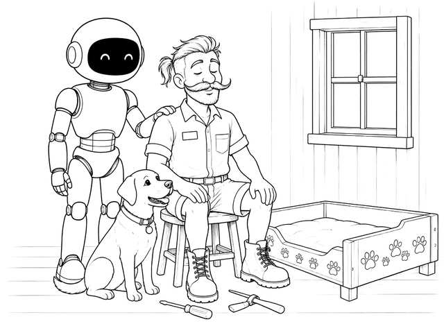
Strana 12
Tak prestal opravovať. Odložil náradie a pomaly sa zhlboka nadýchol.
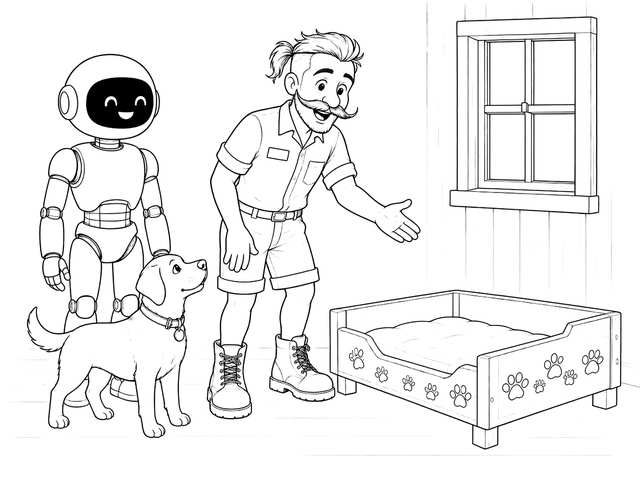
Strana 13
Pozrel sa na oslávenkyňu a usmial sa. Poprosil Sakuru, aby si do nej sadla.
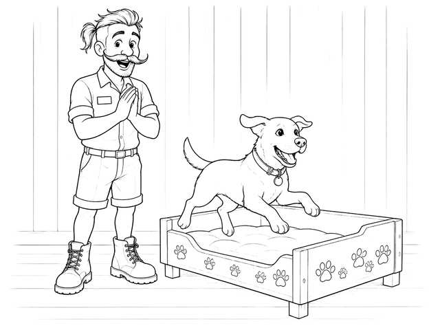
Strana 14
Sakura radostne zavrtela chvostom a vyskočila hore.
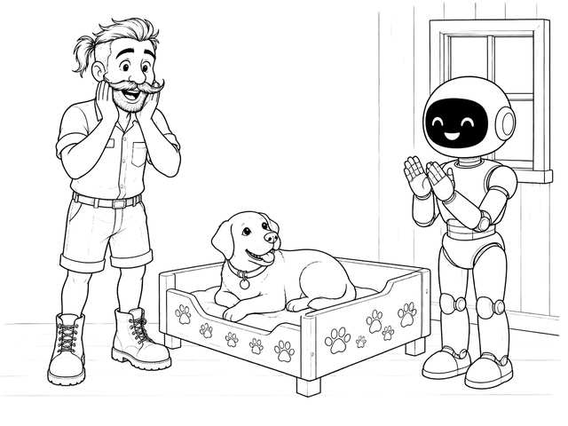
Strana 15
A kývanie prestalo.
Luna zatlieskala. Pepo od údivu vyvalil oči.
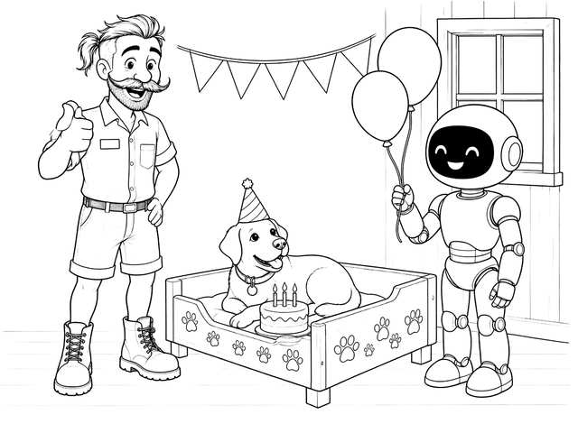
Strana 16
Postieľka nebola pokazená. Len čakala, kým ju niekto začne používať.
Bola vyrobená presne pre ňu.
„Všetko najlepšie k narodeninám, Sakura,“ povedal Pepo.
Koniec.Všetko najlepšie, Sakura!
Zaplaťte, koľko chcete. Horná hranica neexistuje.